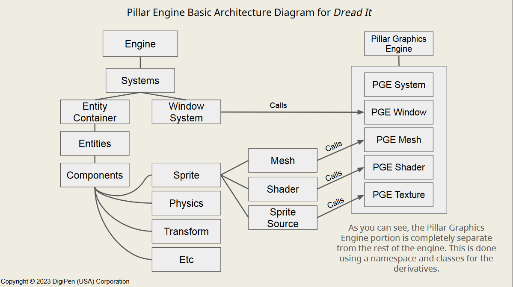

My current project, DREAD IT is a mysterious, single-player
game focused on exploration, strategy, and execution. In DREAD IT, you
play Peggy Caine, a retired cop turned Private Investigator. However,
an alarming number of reports come into her office of various disturbances
around the city, and a love for hunting monsters is awakened.
Made in a custom 2D engine using C++ and OpenGL.
PGE is the general graphics interface for our engine. I wanted to
create a sort of library of OpenGL calls abstracted beneath an interface. Sample
code is hard to show for this so I'll provide a graphic below:

For this game, we wanted a dark and scary vibe where the player could
easily lose the monster. To do this we needed a flashlight for the player that
interacted with the environment. After lots of hard work this is the solution I came to.
The code below shows the steps in the algorithm:
void Flashlight::DistanceCull(glm::vec2 pos)
{
Scene* scene = SceneSystem::GetCurrent();
Tilemap* tilemap = scene->GetMap();
std::vector const& edges = tilemap->GetEdgePool()._lines;
_lines.clear();
_culled.clear();
for (LineSegment const& line : edges)
{
// Cull based on distance
if ((glm::length(line._start - pos) < _cullDist) || (glm::length(line._end - pos) < _cullDist))
{
_culled.push_back(line);
}
}
}